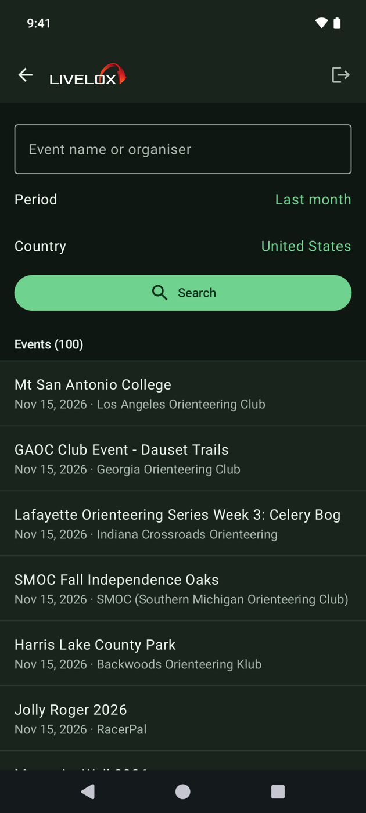

Suunnistusratoja ilman lippuja.
Lataa rata Liveloxista, käynnistä se VirtuO-sovelluksessa, ja puhelin tai kello kertoo, kun saavutat rastin. Toimii iPhonella, Apple Watchilla ja Androidilla, minkä tahansa älykellon kanssa*.
Näin se toimii
Kolme askelta, ja olet valmis juoksemaan.
Lataa rata
Lataa rata Liveloxista, tuo IOF XML -tiedosto (Purple Pen, OCAD) tai pisteitä sisältävä GPX-tiedosto, tai kirjoita rastien koordinaatit käsin.
Lähde juoksemaan
Lähetä rata kelloosi tai juokse puhelimella. Käynnistä kello lähtökolmiolla.
Leimaa rastit
Kun saavutat seuraavan rastin, sovellus värisee, piippaa ja tallentaa väliajan.
Ominaisuudet
Tehty harjoitteluun, suunnistajan toimesta.
Puhelin – älykellon kanssa tai ilman
Toimii iPhonella ja Androidilla: puhelin seuraa sinua taskussa, ilmoittaa jokaisen rastin ja lähettää ilmoituksen, joten älykellosi värähtää jokaisella rastilla*.
Oma Apple Watch -sovellus
Isot, helppolukuiset numerot juoksun aikana, voimakas värinä ja piippaus jokaisella rastilla. Kun rata on kellossa, puhelimen voi jättää kotiin.
Säädettävä säde
Oletuksena rasti leimautuu 15 metrin säteellä. Jos GPS ei sitä huomaa, leimaa rasti käsin.
Piilotettu apu
Jumissa? Yksi pyyhkäisy näyttää etäisyyden ja suunnan seuraavalle rastille.
Väliajat ja historia
Jokainen suoritus tallentuu väliaikoineen. Voit keskeyttää ja jatkaa.
Harjoituksen tallennus Apple Watchilla – jos haluat
Apple Watchilla suoritus tallentuu, jos asetus on päällä, harjoituksena sykkeen, matkan ja reitin kanssa. Oletuksena pois päältä.
Juokse kilpailusi uudelleen – suoraan Liveloxista
Ei tiedostoja etsittävänä. Kirjaudu Livelox-tililläsi, etsi tapahtuma, valitse sarjasi, ja rata on jo kellossasi.
Kirjaudu sisään
Kirjaudut sisään Liveloxin omalla sivulla. VirtuO ei koskaan näe salasanaasi.
Tapahtuma ja sarja
Hae tapahtumaa ja valitse sarja, jonka haluat juosta.
Mene!
Rata latautuu kaikkine rasteineen. Juokse se uudelleen harjoituksena omaan tahtiisi.
Vain julkiset ratatiedot ladataan. Livelox on omistajansa tavaramerkki; VirtuO on itsenäinen sovellus, ei Livelox-tuote.
Näin se näyttää
Kuvakaappauksia iPhone-, Apple Watch- ja Android-sovelluksista. Pyyhkäise nähdäksesi lisää.
iPhone & Apple Watch


Android



Tietosuoja
Lyhyesti: tietosi pysyvät omilla laitteillasi.
- Ei tiliä, ei palvelinta. Radat ja suoritukset tallentuvat vain puhelimeesi ja kelloosi.
- Sijainti: GPS-paikannusta käytetään vain suorituksen aikana rastien tunnistamiseen. Sijaintiasi ei lähetetä minnekään.
- Terveys (vain Apple Watch): vain kellosovellus kirjoittaa sinne, ja vain jos olet ottanut harjoitusten tallennuksen käyttöön asetuksissa. iPhone-sovellus ei kirjoita sinne. Muita tietoja emme sieltä lue. Androidilla tällaista yhteyttä ei ole.
- Livelox: kirjautuessasi lataamme vain julkiset ratatiedot. Emme näe salasanaasi.
- Ei mainoksia eikä seurantaa.